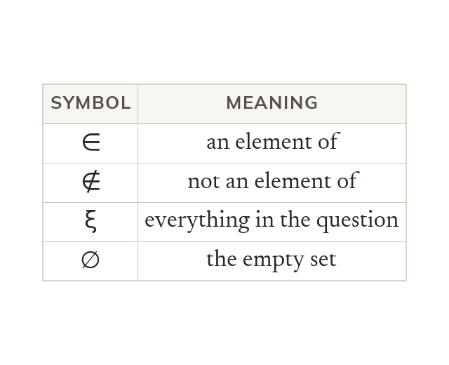
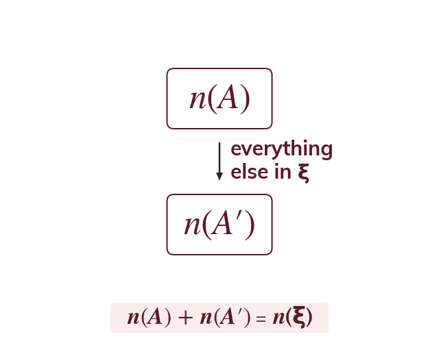
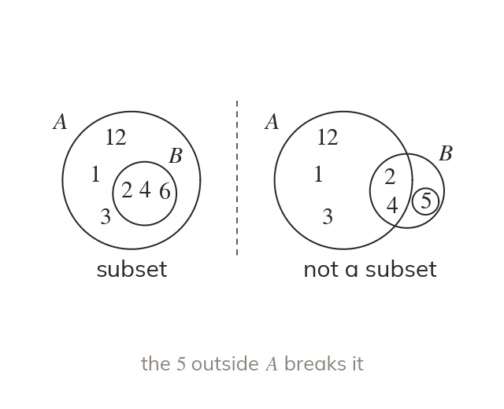
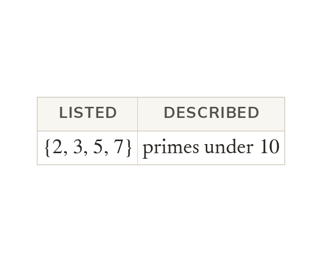

You already used a Venn diagram back in Topic to find the HCF and LCM of two numbers, without ever writing down what a “set” actually is. Today you learn the notation mathematicians use to describe sets precisely – the exact language behind that diagram.
By the end you’ll know…
A set is a collection of distinct elements, named with a capital letter and listed inside curly brackets.
ξ is the universal set, everything under consideration in the question; the empty set has no elements at all.
'in' means is an element of, and '∉' means is not.
A' is the complement of A: everything in the universal set that is not in A.
is the number of elements in and = n(ξ).
B subset-of A means every element of B is also an element of A.
By the end you can
G4Use set notation to describe sets, find complements and state
G5Identify subsets and describe groups of numbers (integers, primes, multiples) using set notation.
Work down the page at your own pace. Write every answer in your book first, then click to check it.
01
Do Now
About 5 minutes
1
List the factors of
2
List the first four multiples of
3
List the prime numbers between and
4
Write using index notation.
Remember these?
LAST LESSON
Make the subject of
— remember both roots.
LAST WEEK
Solve
LAST TERM
Which is bigger, of or of ?
— against
LAST YEAR
'Closer to A than to B' — which construction gives the boundary of this region?
The perpendicular bisector of AB.
02
Learn
Read each card, then follow the worked examples one step at a time.

What a set is
A set is a collection of distinct elements, written in curly brackets. ∈ means “is an element of”. ξ is the universal set: everything in the question.
A set is a collection of distinct elements, written with a capital letter and listed inside curly brackets, e.g. ∈ means “is an element of” and ∉ means “is not an element of”. The universal set, written ξ, is everything under consideration in the question; the empty set ∅ has no elements at all.

Complement and count
is the complement: everything in ξ that is not in is a count, not a set. So = n(ξ).
is the complement of – everything in ξ that is not in is the number of elements in (a count, not a set), and because every element of ξ is either in or in but never both, = n(ξ).
THE COMPLEMENT
ξ ..., (the even numbers in ξ). Find state whether ∈ and state
List ξ without A(A' is everything in ξ that is not in A)
Is ∈ ? ∉ (A holds only even numbers, and is odd)
Count the elements of A counts the elements; it is not the set itself)
Check
n(ξ). Correct.
YOUR TURN · a
With ξ ..., and a) find A' b) state
Hint. Follow the worked example: List ξ without A → Count the elements of A → Check
a) b) Check = n(ξ).
YOUR TURN · b
ξ ..., (the multiples of in ξ). a) Find B'. b) State whether ∈ c) State
Hint. which numbers from to are left once you remove B?
a) b) 8∉B c) Check
03
Check your understanding
Pick an answer. If it's wrong, the feedback tells you which mistake it was.
What does A' represent?
Not quite. That's A itself. A' is everything else in ξ.
Yes. A' is everything in ξ that isn't in A.
Not quite. That's a count. is a set everything in ξ not in A.
Not quite. A' only uses elements of ξ. Leave out anything outside ξ.
ξ (the square numbers in ξ). What is ?
Not quite. That's C itself. C' is everything else in ξ.
Not quite. and aren't in ξ. C' only uses the numbers to
Yes. Take and out of ξ
Not quite. is a count. is the set
ξ (the primes in ξ). What is ?
Not quite. is n(ξ). Count only the elements of D.
Not quite. Count again is elements.
Not quite. is a count, not a set D has elements.
Yes. has elements, so
04
Practise
mark as you go
Checkpoint. ξ ..., and Show your teacher before you go on
1.
Find E'.
2.
Is ∈ ?
no ∉ because is even
3.
Find Check that = n(ξ).
= n(ξ)
ξ ..., and the primes in ξ. Find state whether ∈ and state
1
List ξ without A
2
Is ∈ ?
is not prime, so A
3
Count the elements of A
4
Check
n(ξ)
Write the blanks in your book first, then tap each one to check.
1
ξ ..., and Find and
2
ξ ..., and Ana writes What is her mistake? Give
E' holds only elements of ξ and are not in ξ
3
ξ ..., and True or false? (a) ∈ (b) ∈ (c) ∉
(a) True (b) False (c) True
4
n(ξ) and Find
= n(ξ)
5
ξ ..., and Find
C is everything in ξ not in C'
EXT
ξ ..., and = {square numbers}. List then find without listing
so = n(ξ) -
05
Learn
Read each card, then follow the worked examples one step at a time.

Subsets
⊆ A means every element of is also in A. Check each element of in turn. Most of them is not enough.
⊆ means every element of is also an element of – to check, go through each element of in turn and confirm it appears in It is not enough for most of B's elements to appear, and it is not the same relation as ⊆

Describing groups with notation
A set can be described by the property its elements share. Here and are the primes under
instead of listing every element, a set can be described by the property its elements share, e.g. the set of prime numbers less than or the set of multiples of between and (checking the wording carefully for which boundary values are included).
SUBSETS
= {factors of , Is ⊆ ?
Test each element of B ∈ ∈ ∈
Every element of is also in so ⊆
WRITING A SET
Now describe the set of prime numbers less than using set notation.
YOUR TURN · c
Given = {factors of and decide whether ⊆
Hint. Follow the worked example: Test each element of B
∈ and ∈ so every element of is in and ⊆
YOUR TURN · d
= {factors of Is ⊆ ? Then describe the set of multiples of between and using set notation.
Hint. check each element of C against A in turn.
2∈A, 5∈A, 10∈A, so ⊆ A. Multiples of between and
06
Check your understanding
Pick an answer. If it's wrong, the feedback tells you which mistake it was.
Is ⊆ ?
Not quite. Every element of B must be in A. isn't, so no.
Not quite. Size doesn't decide it. Check each element of B isn't in A.
Not quite. A isn't inside B either. Check each element of B isn't in A.
Yes. is in B but not in A, so B isn't a subset of A.
Which statement is correct?
Not quite. D is a set, not one element. Use ⊆ for a set ⊆
Yes. and are both in so ⊆
Not quite. is a single element, so write ∈ not ⊆.
Not quite. has and which aren't in It's ⊆
Which set notation correctly describes the multiples of from to ?
Not quite. is only the first multiple. Keep going
Yes. The multiples of are up to
Not quite. is a multiple of too, and "from to 25" includes it.
Not quite. and are factors of Multiples of are …
07
Practise
mark as you go
Checkpoint. and Show your teacher before you go on
1.
Is ⊆ ?
yes - every element of F is in A
2.
Describe the primes less than in set notation.
or {x : is prime,
= {factors of and Is ⊆ ? Then list the multiples of less than in set notation.
1
List the factors of
2
Test each element of B
∈ and ∈ but A
3
Decide
not every element of B is in A, so B is a subset of A
4
Write the set
{multiples of less than
Write the blanks in your book first, then tap each one to check.
1
List the elements of {factors of
2
, and a) Is ⊆ ? b) Is ⊆ ?
a) ∈ and ∈ so ⊆ b) ∉ so R is not a subset of
3
List the elements of {prime numbers between and
4
and Max writes ⊆ and ∈ What is his mistake? Write both correctly.
is an element, so it takes ∈ ∈ D is a set inside E, so it takes ⊆ ⊆
5
Describe in words, in set notation.
{odd numbers less than
EXT
= {multiples of less than and = {multiples of less than Explain each answer. a) Is ⊆ ? b) Is ⊆ ?
a) Every multiple of is a multiple of so ⊆ b) ∈ but ∉ so is not a subset of
08
Exit ticket
On paper, on your own, then check
1
What is the difference between and ? Use an example to show what each one actually gives you.
is a number - how many elements are in set is a set - everything in the universal set that is NOT in E.g. if A={2,4,6}, but would be a whole different list of elements, not a count.
2
ξ (the factors of that are in ξ). a) Find G'. b) State
a) b)
3
= {factors of Is ⊆ ? Then describe the set of multiples of between and using set notation.
Yes, B is a subset of A (every element of B is in A). Multiples of between and
Finished? Next lesson: 8.7.2 Venn Diagrams.
09
How did it go?
Be honest: it's just for you
For each skill, tap the one that is true for you today. Your Revise pages start with anything you mark Not yet.
Use set notation to describe sets, find complements and state
Identify subsets and describe groups of numbers (integers, primes, multiples) using set notation.
Your ratings are saved on this device only.
Practise more
After the lesson, or whenever you want more
Dr Frost
Log in, then search for a code to practise that skill.
243bUnderstand notation for the universal set, subsets, membership and empty sets.
243fList elements using set notation.
243gDetermine the number of elements in a set given a list.